认识主面板
登录成功后出现的竖长窗口就是主面板，几乎所有功能都从这里开始。本章逐一介绍主面板的各个区域、系统菜单里的入口，以及关闭主面板和使用托盘图标的方法。
- 适用：全体员工
- 需要：已登录
主面板一览
主面板自上而下分为头部、搜索框、页签、列表区和底部栏五个部分：
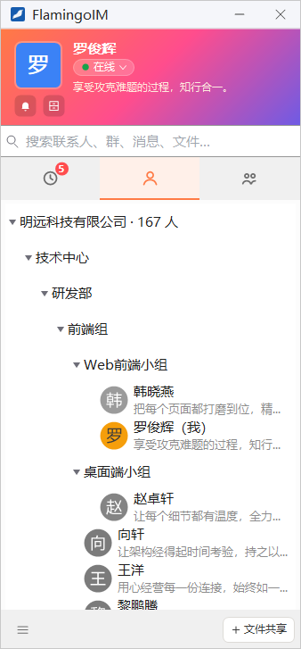
1 2 3 4 5 6 7 8 9 10 11 12- 头像：点击修改头像
- 昵称：点击打开本人资料
- 状态胶囊：切换在线状态
- 个性签名：点击就地修改
- 公告中心：查看平台和企业发布的公告
- 消息盒子：查看收进消息盒子的会话
- 搜索框：搜索联系人、群、消息和文件
- 消息页签：最近会话，角标是未读消息总数
- 联系人页签：收藏与组织架构
- 群组页签：你加入的群
- 系统菜单：更多功能与设置的入口
- 底部按钮：随页签变化，如「文件共享」「建群」
头部：头像、状态与签名
修改头像与查看资料
点头部左侧的头像会打开 修改头像 对话框；点头像右侧的昵称会打开本人资料窗口，在那里可以修改昵称、性别、生日等资料。这两项的具体操作见「个人资料与账号」。
切换在线状态
昵称下方的胶囊显示你当前的状态。点它会弹出状态菜单，当前所处的状态后面带有「（当前）」：
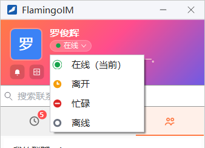
| 状态 | 说明 |
|---|---|
| 在线 | 正常工作状态 |
| 离开 | 暂时不在电脑前；可以设置「离开时自动回复」 |
| 忙碌 | 正在忙，请同事稍后再联系；可以设置「忙碌时自动回复」 |
| 离线 | 断开与服务器的连接，同事看到你是离线状态；之后选在线、离开或忙碌会重新连接 |
自动回复在「系统设置 → 聊天」里设置。
修改个性签名
昵称下方第二行是个性签名。点签名文字，它会就地变成输入框：
- 点签名文字。还没有设置签名时，这里显示「点击添加个性签名」。
- 输入新的签名，最多 127 个字符。
- 按 Enter 或在别处点一下保存；按 Esc 放弃修改。
离线状态下不能修改签名，保存时会提示「您当前处于离线状态，无法修改个性签名，请上线后重试。」
公告中心与消息盒子
头像下方有两个小按钮：
- 铃铛按钮打开 公告中心。有未读公告时按钮上显示条数，鼠标停在上面会提示「你有 N 条新公告」。详见「公告与通知」。
- 右边的按钮打开 消息盒子，里面是你设为「收进消息盒子且不提醒」的会话。有未读消息时按钮上同样显示条数。详见「会话列表与消息提醒」。
搜索
头部下方的搜索框提示「搜索联系人、群、消息、文件…」。输入关键字后，下方立即弹出结果，关键字以黄色底色标出：
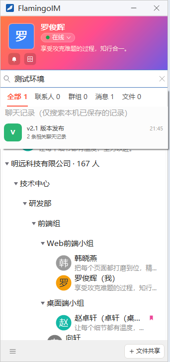
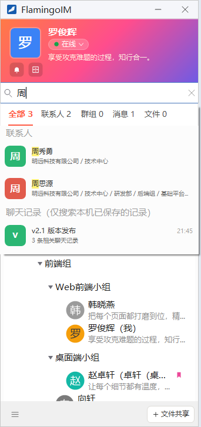
- 能搜什么：联系人（按姓名、账号，也可以输入拼音首字母或全拼，如输入
zsy或zhousiyuan找周思源）、群、部门、聊天记录、文件，以及备忘。 - 按类别筛选：结果上方有 全部、联系人、群组、消息、文件 几个标签，后面的数字是各类的命中数。「全部」里聊天记录和文件各最多列 3 条，更多的点段末的 查看更多聊天记录 或 查看更多文件。
- 聊天记录只查本机：分组标题「聊天记录（仅搜索本机已保存的记录）」说明这里只查本机保存的记录。需要查更早的消息时，在 消息 标签里点 搜索服务器上的聊天记录（需要联网），或点 在聊天记录管理器中查看全部 到聊天记录管理器里查看每一条命中。
- 群文件需要联网：「文件」标签里的群文件是向服务器查询的，离线时搜不到。
- 用键盘操作：主面板在前台时按 Ctrl+K 把光标移到搜索框；↑ ↓ 在结果之间移动，Enter 打开选中的一条，Ctrl+Tab 切换筛选标签；按 Esc 先收起结果下拉（关键字保留），再按一次清空搜索框。
- 最近搜索：搜索框为空时，下拉里显示「最近搜索」的关键字，点一个可以再次搜索，点右侧的 清空 删除这些记录。
三个页签
搜索框下方有三个图标页签，从左到右依次是 消息（时钟图标）、联系人（人像图标）和 群组（双人图标）。当前页签的图标显示为橙色。
消息
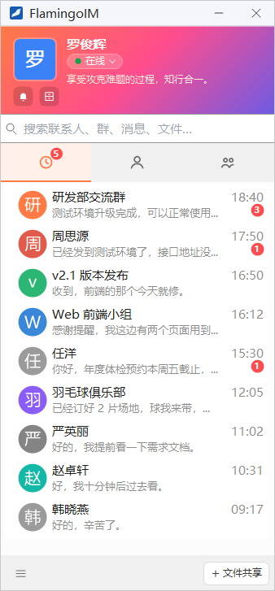
「消息」页签列出最近的单聊和群聊会话，最近有消息的排在上面。每一行显示对方的头像、名字、最后一条消息的摘要和时间，有未读消息时右下角显示红色数字。页签图标上的角标是所有会话的未读总数。
- 单击一行即打开对应的聊天窗口，并清除该会话的未读数。
- 置顶的会话固定排在最上面，整行底色略深、左侧有一道橙色竖条。
- 设为「收进消息盒子且不提醒」的会话不单独出现，而是汇总成一行 消息盒子。
- 右键一行可以标为未读、置顶、设置消息提醒等。
这些操作详见「会话列表与消息提醒」。
联系人
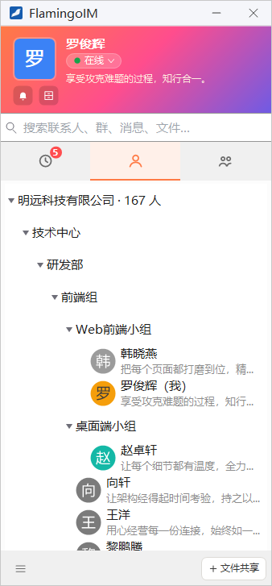
「联系人」页签就是企业通讯录，自上而下可能有这几组（某一组没有内容时不显示）：
- 我的收藏：你收藏的同事和群。
- 组织架构：标题形如「明远科技有限公司 · 167 人」，下面按部门逐级展开，点部门名展开或收起。
- 其他联系人：还没有分配到任何部门的同事。
- 服务号：企业开通的服务号。
单击一个人只是选中，双击才打开与他的聊天窗口；双击自己会打开本人资料。右键一个人可以发起通话、查看资料、修改备注等，详见「通讯录与联系人」。
群组
「群组」页签列出你加入的所有群，标题「我的群聊 · N」中的 N 是群的个数。每个群显示群名、群号和人数。与联系人一样，单击只是选中，双击打开群聊窗口，右键弹出群的菜单。
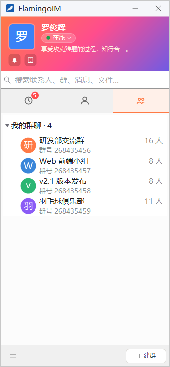
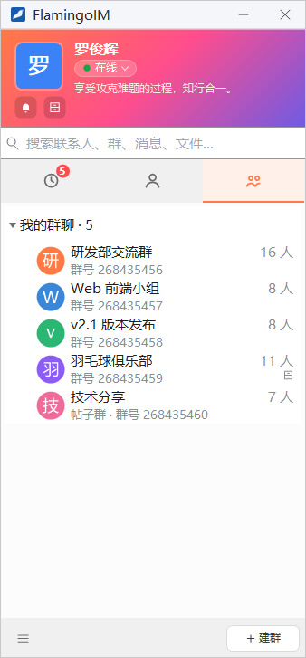
帖子群没有聊天消息，只有帖子和评论，双击它打开的是帖子群窗口，详见「帖子群」。普通群的用法见「群聊」。右图中「羽毛球俱乐部」右下角的小图标表示它被设为「收进消息盒子且不提醒」。
底部栏
主面板最下方一栏有两个按钮：
| 位置 | 按钮 | 作用 |
|---|---|---|
| 左侧 | ≡ | 打开系统菜单，见下一节 |
| 右侧 | 建群 | 位于「群组」页签时显示，打开新建群聊对话框（见「群聊」） |
| 文件共享 | 位于「消息」或「联系人」页签时显示，打开「文件共享」窗口（见「文件共享」） | |
| 查找 | 程序没有文件共享模块时代替「文件共享」显示，点它把光标移到搜索框 |
系统菜单
点底部栏左侧的 ≡ 按钮弹出系统菜单。菜单按用途分为五组，每组开头有一行灰色的组名：
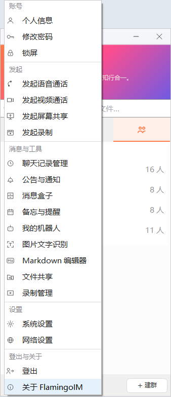
| 菜单项 | 作用 |
|---|---|
| 账号 | |
| 个人信息 | 打开本人资料窗口（详见） |
| 修改密码 | 修改登录密码（详见） |
| 锁屏 | 设置临时密码后锁住屏幕（详见） |
| 发起 | |
| 发起语音通话 | 选一个联系人或群发起语音通话（详见） |
| 发起视频通话 | 选一个联系人或群发起视频通话（详见） |
| 发起屏幕共享 | 选一个联系人或群，打开聊天窗口并选择要共享的内容（详见） |
| 发起录制 | 开始录制屏幕；录制过程中这一项变为「停止录制」（详见） |
| 消息与工具 | |
| 聊天记录管理 | 打开聊天记录管理器（详见） |
| 公告与通知 | 打开公告中心，与头部的铃铛按钮相同（详见） |
| 消息盒子 | 打开消息盒子窗口（详见） |
| 备忘与提醒 | 打开你自己的备忘窗口（详见） |
| 我的机器人 | 管理替你自动回复的个人机器人（详见） |
| 图片文字识别 | 打开识别窗口，选一张图片识别其中的文字（详见） |
| Markdown 编辑器 | 打开一个空白的 Markdown 编辑器（详见） |
| 文件共享 | 打开「文件共享」窗口（详见） |
| 录制管理 | 查看和管理你录过的录像（详见） |
| 设置 | |
| 系统设置 | 客户端的各项设置（详见） |
| 网络设置 | 修改服务器地址和端口（详见） |
| 登出与关于 | |
| 登出 | 退出当前账号，回到登录窗口（详见） |
| 关于 FlamingoIM | 查看版本信息与检查更新（详见） |
关闭主面板
点主面板右上角的 × 时，会弹出「关闭 FlamingoIM」对话框，请你选择关闭方式：
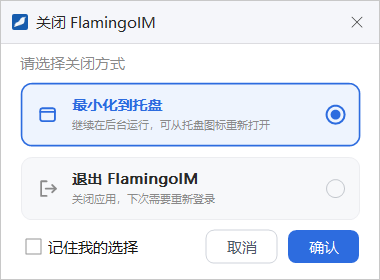
- 最小化到托盘：程序继续在后台运行，照常接收消息，单击托盘图标可以重新打开主面板。
- 退出 FlamingoIM：关闭程序，下次需要重新登录。
选好后点 确认。勾选 记住我的选择 后，以后点 × 不再询问，直接按记住的方式处理。
记住的方式可以随时在「系统设置 → 通用 → 关闭主面板时」修改；没有勾选「记住我的选择」时，对话框打开时默认选中的也是这里设置的方式。
托盘图标
FlamingoIM 运行时，任务栏右下角的通知区域里有一个托盘图标。右键单击它弹出托盘菜单：
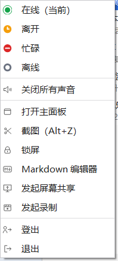
登录之前，托盘菜单里只有 打开主面板、截图、锁屏、Markdown 编辑器 和 退出，因此不登录也可以截图、锁屏和编辑 Markdown 文档。
- 快速显示或隐藏主面板：登录后在任何程序里按 Ctrl+Alt+D，主面板可见时把它隐藏，不可见时把它调到前台。
- 新消息提醒：收到新消息而聊天窗口没有打开时，托盘图标会闪烁。单击闪烁的托盘图标会打开有未读消息的会话；鼠标停在托盘图标上，会弹出未读消息的浮窗。
- 掉线提示：与服务器的连接断开时，托盘会弹出气泡「您已经掉线，正在帮您重连......」，客户端会自动重连，重连期间托盘图标在亮、灰之间交替。